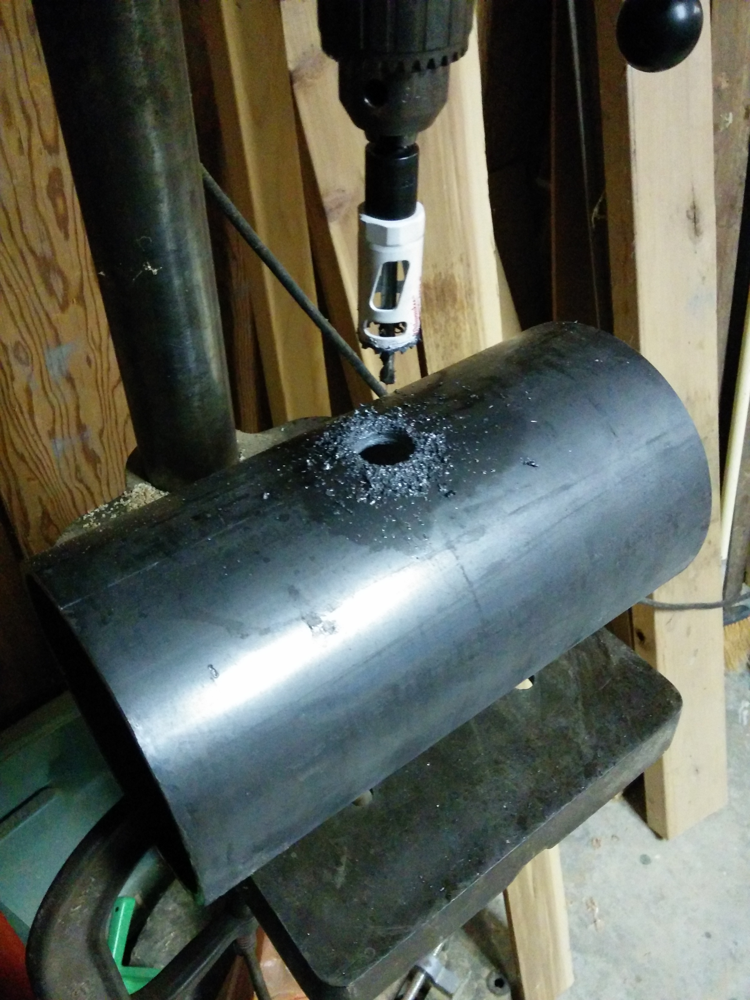
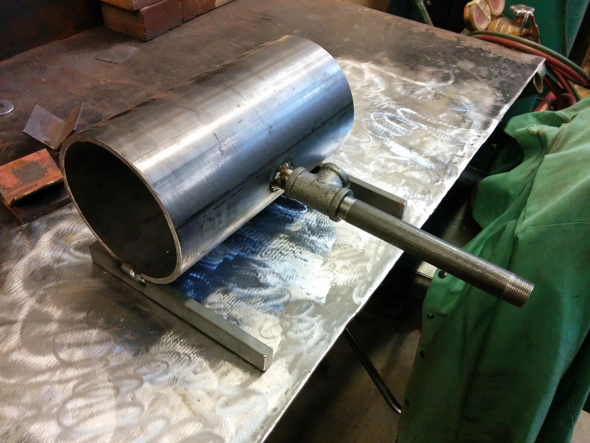
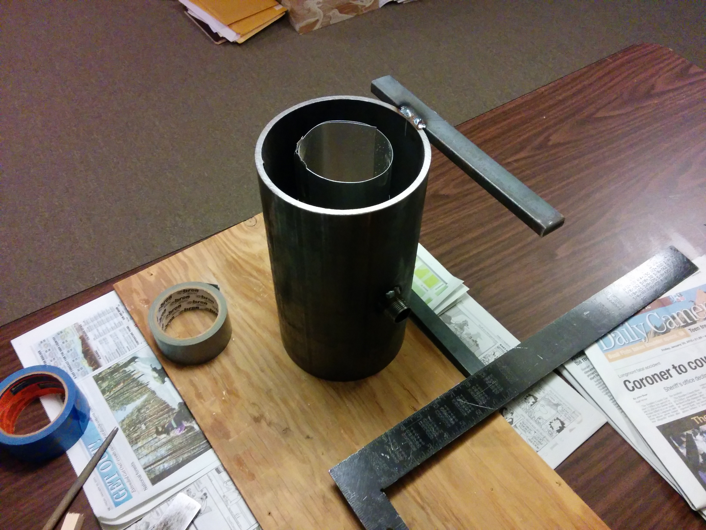

Forge Project
Intro
Motivated by this Hackaday post.
The Forge Casing
6 inch steel pipe instead of soup can. 1 inch burner inlet [Figure 1]. Legs welded so that the burner is mounted horizontally [Figure 2].

Figure 1: Drilling the forge casing

Figure 2: Legs and burner attachment welded

Figure 3: Attachment point for burner
The Burner
Cast iron pipe - don't use galvanized pipe! From z-burner design: http://www.zoellerforge.com/zburner.html Originally used 1/32nd" welding tip for gas outlet, proved to be too small for good gas flow [Figure 6]

Figure 4: Burner internals

Figure 5: Burner diagram
Figure 6: Testing the first iteration of the burner - the flame is pretty weak
Figure 7: First iteration of the burner attached to the forge casing
Figure 8: First iteration of the burner attached to the forge casing (again)

Figure 9: Comparison of the new and old gas outlets
Figure 10: Fixed burner! Look at that flame...
Pouring the Forge Insulation

Figure 11: First attempt at pouring the forge cement
Needed - Link of bad cement
Needed - Photo of good pour
Needed - Link of good cement
Needed - Photo of working forge off
Needed - Photo of working forge hot